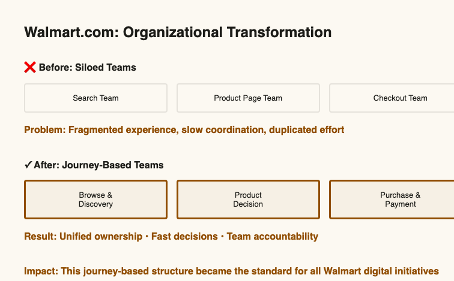
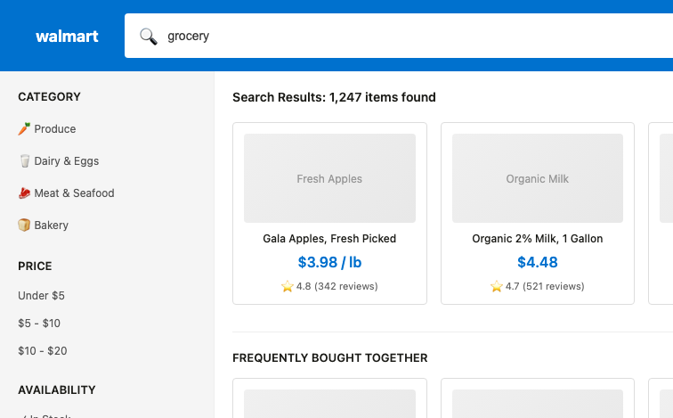
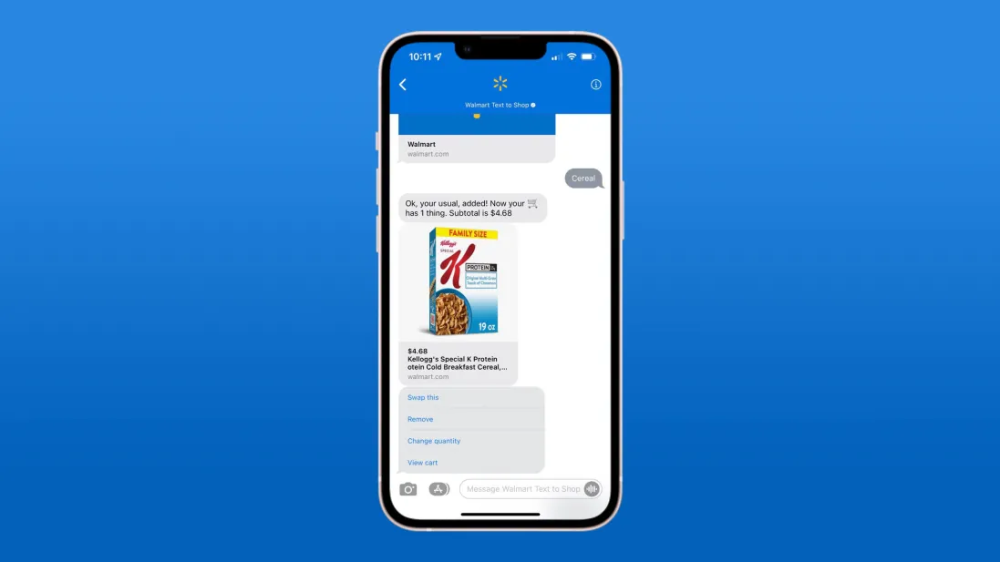
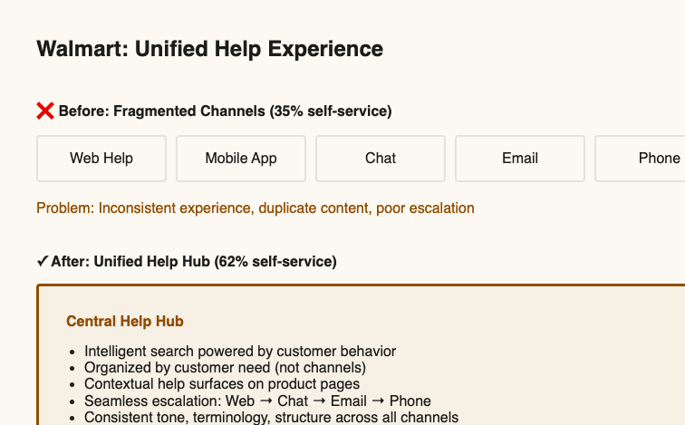
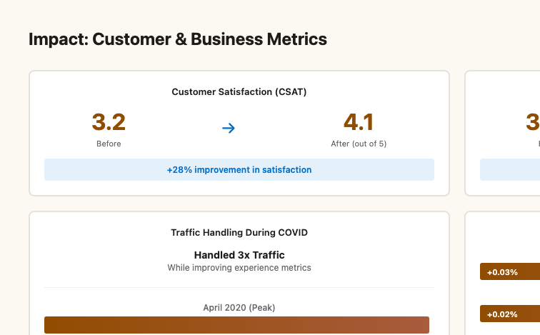
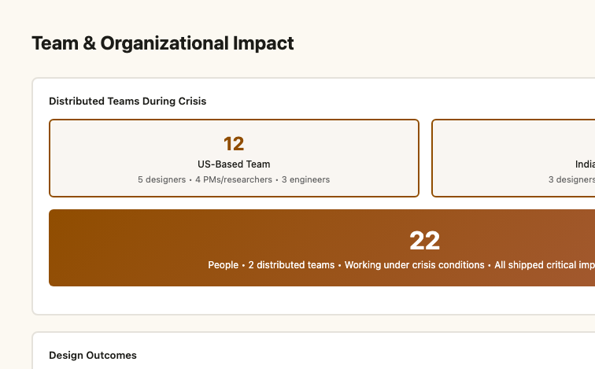

Walmart.com: Commerce Journey Optimization & Unified Support Experience
Leading experience strategy for Walmart.com's e-commerce funnel during pandemic acceleration
"Led key sections of Walmart.com's commerce funnel across discovery, conversion, support, and post-sale engagement, helping unify fragmented customer journeys during a period of accelerated digital growth."
The Challenge
Walmart's digital commerce journey was distributed across multiple product and platform teams, creating fragmented customer experiences across discovery, decision-making, support, and post-sale engagement. I was part of a four-leader design team — the commerce funnels were sliced thin, and each leader held influence over a specific section. During COVID-driven ecommerce acceleration, with 3× traffic surges, Walmart needed faster optimization of critical funnel touchpoints while supporting a massive influx of new digital shoppers.

Key Decisions
I designed and led experience strategy across search, typeahead, search results, personalization, PDP bottom-fold, bundles, help flows, and post-sale surfaces. My focus was on interconnected funnel systems — not isolated features — so each touchpoint reinforced the next rather than operating independently.
The GenAI search experience combined deep personalisation with natural language to meet the expectations of our youngest, tech-forward shoppers. I built a geo-aware store mapping feature to connect digital discovery to physical availability. I re-engineered bundles and offers to function as a core part of the customer journey rather than promotional afterthoughts. And I leveraged the Blue App consolidation to ride the Walmart+ wave — embedding membership value directly into the shopping experience.

Gen AI-powered search experience: surfacing relevant results, personalised recommendations, and contextual substitutions


I redesigned support from a reactive service layer into a contextual, integrated layer within the commerce journey. This meant creating a unified contact experience across web, mobile, chat, phone, and social—and embedding help directly into the shopping flow so customers never had to leave to get assistance.

Smart substitutions: proactively offering alternatives when items are out of stock — keeping customers in the shopping flow rather than losing them at checkout

Each of the four design leaders owned a slice of the funnel. Making the whole thing coherent required ongoing alignment across product, engineering, and peer design leaders across geographies — not just designing well within your section, but understanding how your decisions affected the sections either side of you.
I also proposed Shop with Friends — a social commerce concept designed to merge virtual try-ons with social validation. During a period of physical isolation, people still wanted to shop with others. This was the answer: collaborative, real-time decision-making inside the digital journey.
Shop with Friends — the social commerce concept in motion
The Results
Quarterly funnel lifts delivered across core commerce journeys — observed across multiple quarters
Support and engagement unified across web, app, chat, phone, and social — embedded into the shopping flow
Contributed to Walmart+ onboarding design (launched Sept 2020, now 11M+ members)
Sustained design quality through 3× pandemic-driven traffic surge across the entire commerce funnel


What Made It Notable
- Operated at enterprise ecommerce scale — Optimising experiences for billions of transactions while maintaining craft and specificity in every design decision.
- Proposed and shipped concepts before the category existed — Shop with Friends and geo-aware store mapping were ahead of where commerce design was heading. The platform was the right moment to push those ideas through.
Project: Walmart.com — Commerce Journey Optimization & Unified Support Experience
Timeline: 2020–2021 | Team Led: One of 4 design leaders; 20–30 people (US + India)
Impact: 0.03% quarterly funnel improvements • 11M Walmart+ users • Unified customer support • Pandemic-scale operations